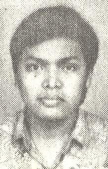

 Berikut merupakan kumpulan tulisan untuk mengingat wafatnya "Babe" Edwin Prijanto (angkatan 1988). Kumpulan tulisan ini berasal dari milis ILUNI12. Lihat juga, situs Alumni Iluni12 serta situs tidak resmi Fusilkom UI. Terakhir, terimakasih kepada semua pihak yang telah membantu terbentuknya berkas web ini.
Rekan-rekan sekalian,
Mari kita tundukkan kepala, mengingat wafatnya "Babe" Edwin Prijanto'88 tepat 10 tahun yang lalu di Purwakarta, dan dimakamkan di Bogor.
Untuk kaum muda yg belum sempat mengenal Babe, berikut sekelumit cerita ttg almarhum Edwin lahir 25 Agustus 1969. Dipanggil Babe karena aura kebapakan memancar kuat dari dirinya. Selain itu tubuhnya gemuk spt bapak-bapak. Sehingga tidak heran dalam MK 1988, kami dgn kompak memilih Babe sebagai ketua angkatan.
Almarhum adalah anak tunggal. Kisah tragis terjadi ketika Edwin masih dalam kandungan. Ayahnya (almarhum Botjah Prijanto) meninggal dalam dinas. Prijanto Senior bukan orang sembangan, karena dalam usia 20-an telah berhasil menggondol Ph.D. dari Inggris. Tentulah suaminya membuat ibunya Edwin yang sedang hamil sedih sekali. Edwin akhirnya lahir dengan kelainan jantung bawaan.
Walau pun masa kecilnya didera penyakit, otak Edwin sangat encer, dan hebatnya dia tidak sombong, juga sangat penolong. Mungkin karena Edwin terbiasa menjaga ibu, maka dia jadi cepat dewasa, kebapakan.
Kisah menjadi makin tragis ketika Edwin wafat hanya beberapa bulan setelah menjadi S.Kom (kalau sampai sini, gue pasti nangis). Almarhum diterima sebagai pegawai P.T. Indosat. Karyawan baru diwajibkan ikut dalam semacam latihan kemiliteran di Purwakarta. Jantungnya nggak kuat... akhirnya Babe wafat menjelang akhir pelatihan. Seluruh Fasilkom (dulu PSIK) berduka, apalagi ibunya Edwin. Dulu suaminya mati muda dalam tugas, kemudian anak tunggalnya begitu pula.
Pertemuan terakhir saya dgn Babe terjadi di ruang Himiko merangkap Musholla, sekarang gudang di sebelah ruangan Pak Toemin. Saat itu adalah beberapa hari menjelang keberangkatannya ke Purwarkarta. Babe yang habis sholat duduk memakai kaos kaki, sambil menceritakan rencananya itu. Ketika saya ingatkan tentang penyakit jantungnya dan bahayanya ikut dalam kegiatan fisik seperti latihan militer, Babe menyatakan kesanggupannya. Dokter yang biasa memantau kondisi Babe mengijinkannya ikut. Selain itu Babe juga sudah mulai latihan jogging di sekitar rumahnya di Tajur, Bogor.
Obrolan pun sampai pada rencananya melanjutkan studi ke luar negeri setelah beberapa tahun bekerja. Kemungkinan ibunya akan diajak, krn kasihan ditinggal sendirian. Sama dgn alasannya mengapa selama kuliah tidak pernah kost, tapi bolak-balik Bogor-Depok: "Kasihan ibu, sendirian."
Yah, Babe. Singkat nian hidupmu. Belum banyak yang Babe hasilkan, walaupun sebenarnya almarhum punya segudang potensi. Tapi ada teladan yang bisa kita ambil dari hidupnya. Bahwa wibawa yang sejati bukan datang dari kesombongan, tapi dari kerendahan hati.
Mengenang almarhum Edwin Prijanto alias Babe, seorang sahabat yang baik,... ada yang masih ingat (terutama angkatan 88), rumah beliau di Tajur - Bogor sering kita jadikan "markas" kalau jalan-jalan ke Bogor atau Puncak?
Dekat rumah beliau ada bioskop 21, dan sekali-sekalinya saya nonton di sana, bareng-bareng dulu, dan sampai sekarang cuma sekali itu saya nonton di Bogor... saya juga sering nebeng naik Toyota Starlet beliau kalau kita lagi ada acara, terutama kalau mau balik ke Depok... eh, belakangan, mobil tsb ganti dengan Suzuki Carry warna putih... dan yang paling sering, saya meminjam PR-nya Edwin... almarhum nggak terlalu suka kalau kita minjam PR-nya, trus cuma nyalin, katanya seharusnya kita pelajari juga lah, sehingga dia juga percuma meminjamkan... bahkan almarhum sama sekali tidak pelit kalau kita minta diajarin sesuatu...
Beristirahatlah dengan tenang di sisi-Nya, teman yang baik, segala kebaikanmu akan kekal abadi dan kami kenang...
Saya masih ingat ketika pagi itu kita-kita yang di kampus mendengar berita duka tersebut, serta merta semua kuliah hari itu dibatalkan dan mahasiswa semua angkatan serta dosen dan staf berbondong-bondong ke Bogor untuk mengiringi kepergian Babe. Hal ini menunjukkan bahwa beliau sangat dekat di hati semua orang.
Saya masing ingat ngobrol-ngobrol bareng dia kalo naik KRL, sempit, pengap tapi masih tetap ceria. Berita kematian beliau memang mengejutkan seluruh kampus. Sampai hampir seluruh mahasiswa dan staff ramai-ramai pergi ke Bogor Jalan raya Tajur sempat macet karena banyak iring-iringan mobil.
Iya -- jadi ingat banget... apalagi kemarin aku sempet nemuin buku sewindu FASILKOM... dan ada tentang almarhum erwin...
Seminggu sebelumnya... masih aku godain tuh.... masih bercakap-cakap... berikutnya udah nganter ke kubur...
Peristiwa ini menjadi pelajaran bagi kita semua, setiap orang bisa mengukur standar/ kemampuan fisiknya, kemampuan ini bisa diukur dari pengalaman sehari-hari, bisa dianalisa melalui medical check-up.
Kalau standar-standar seseorang diketahui tidak memenuhi standar-standar diluarnya (perusahaan/ kampus/ lingkungan), mereka lebih baik mengikuti standar pribadinya. Ini bagian dari ikhtiar. Saya juga sering menyarankan ke teman-teman sekerja, kalau merasa pekerjaannya "berat", dan kemampuan fisiknya tidak match, lebih baik banting setir nyari yg lebih ringan, kalau perlu kerja freelance (tidak penuh), walaupun duitnya juga tidak penuh :)
Takdir ditangan Tuhan, tapi manusia disarankan ber-ikhtiar semampu yg ia bisa.
Sahabatku Edwin... Semoga Engkau Bisa Beristirahat dengan tenang.. Lihatlah betapa kami masih mengenang masa2 kebersamaan kita.. walaupun itu hanya singkat..
Ya Allah, terimalah sahabatku Edwin disisiMu... Amin...
Kawan semua.. Ada satu hal yang selalu teringat ama gua. Kalo menyebut Edwin (alm)... Dia sering sekali terkantuk-kantuk kalo dikelas... Padahal dia duduk paling depan dalam kelas yg jumlah pesertanya maksimal 23 orang... Namun kalo dia tiba-tiba ditanya tentang apa yang diterangin tersebut dia bisa jawab dengan baik...
Hal lain adalah dia jarang sekali menampakkan muka cemberut yang ada selalu tertawa atau paling ga tersenyum... Orangnya bukanlah orang yg selalu serius, malah lebih banyak humornya...
Dan satu hal lagi... Dia nggak pernah memaksakan kehendak pada orang lain... Lebih sering mengalah... Hal ini tercermin dalam kegiatan organisasi... Dia memilih jadi penyeimbang dalam organisasi...
Walau pun sangat taat dalam beragama namun sisi dunianya juga ga kalah..